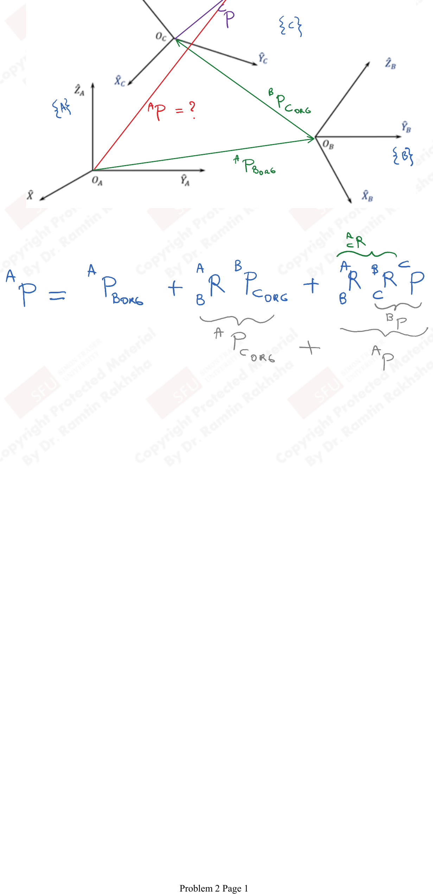
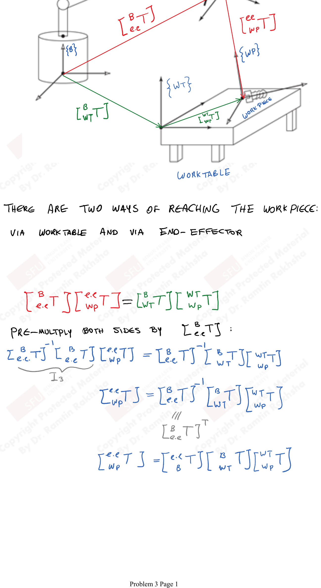
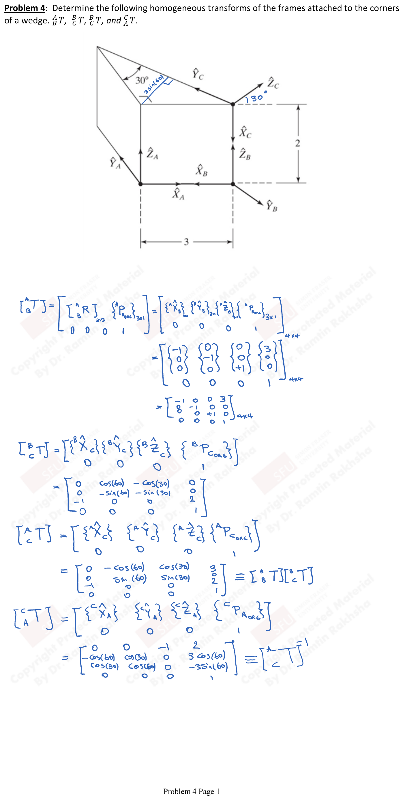

Tutorial 1: Spatial Descriptions & Transforms
Problem: Check the properties of the following rotation matrix:
$$R = \begin{bmatrix} 0.82364 & 0.1 & 0.5582 \\ 0.4755 & 0.41456 & -0.7759 \\ -0.30902 & 0.9045 & 0.2939 \end{bmatrix}$$Property 1: Magnitude of Each Row Equals 1
Row 1:
$$\sqrt{(0.82364)^2 + (0.1)^2 + (0.5582)^2} = 1$$Row 2:
$$\sqrt{(0.4755)^2 + (0.41456)^2 + (-0.7759)^2} \approx 1$$Row 3:
$$\sqrt{(-0.30902)^2 + (0.9045)^2 + (0.2939)^2} \approx 1$$Property 2: Magnitude of Each Column Equals 1
Column 1:
$$\sqrt{(0.82364)^2 + (0.4755)^2 + (-0.30902)^2} \approx 1$$Column 2:
$$\sqrt{(0.1)^2 + (0.41456)^2 + (0.9045)^2} \approx 1$$Column 3:
$$\sqrt{(0.5582)^2 + (-0.7759)^2 + (0.2939)^2} \approx 1$$Property 3: Cross Products of Rows and Columns
Cross product of Row 1 and Row 2:
$$\{0.82364,\ 0.1,\ 0.5582\} \times \{0.4755,\ 0.41456,\ -0.7759\}$$Check: result should equal $\pm$ Row 3:
$$= \{-0.301,\ 0.9045,\ 0.2939\} = \text{Row } 3$$Row 2 $\times$ Row 3 = Row 1
Row 3 $\times$ Row 1 = Row 2
Similarly for columns:
- Column 2 $\times$ Column 3 = Column 1
- Column 1 $\times$ Column 3 = Column 2 (with sign consideration)
- Column 3 $\times$ Column 1 = Column 2
Property 4: Dot Products of Rows and Columns Equal Zero
Row 1 $\cdot$ Row 2:
$$(0.82364)(0.4755) + (0.1)(0.41456) + (0.5582)(-0.7759) = 0$$Row 2 $\cdot$ Row 3:
$$(0.4755)(-0.30902) + (0.41456)(0.9045) + (-0.7759)(0.2939) = 0$$Row 3 $\cdot$ Row 1:
$$(-0.30902)(0.82364) + (0.9045)(0.1) + (0.2939)(0.5582) = 0$$Column 1 $\cdot$ Column 2:
$$(0.82364)(0.1) + (0.4755)(0.41456) + (-0.30902)(0.9045) = 0$$Column 2 $\cdot$ Column 3:
$$(0.1)(0.5582) + (0.41456)(-0.7759) + (0.9045)(0.2939) = 0$$Column 1 $\cdot$ Column 3:
$$(0.82364)(0.5582) + (0.4755)(-0.7759) + (-0.30902)(0.2939) = 0$$Property 5: Determinant of R
$$|R| = 0.99997 \approx 1$$This confirms $R$ is a proper rotation matrix (special orthogonal, $R \in SO(3)$).
Problem: Determine ${}^{A}P$, if the position vectors ${}^{A}P_{\text{BORG}}$, ${}^{B}P_{\text{CORG}}$, and ${}^{C}P$ and the rotation matrices ${}^{A}_{B}R$ and ${}^{B}_{C}R$ are known.

The position of point $P$ in frame $\{A\}$ can be found by tracing through the chain of frames:
$${}^{A}P = {}^{A}P_{\text{BORG}} + {}^{A}_{B}R\ {}^{B}P_{\text{CORG}} + {}^{A}_{B}R\ {}^{B}_{C}R\ {}^{C}P$$This can be written more compactly as:
$${}^{A}P = {}^{A}P_{\text{CORG}} + {}^{A}_{C}R\ {}^{C}P$$where:
- ${}^{A}P_{\text{CORG}} = {}^{A}P_{\text{BORG}} + {}^{A}_{B}R\ {}^{B}P_{\text{CORG}}$ is the origin of frame $\{C\}$ expressed in frame $\{A\}$
- ${}^{A}_{C}R = {}^{A}_{B}R\ {}^{B}_{C}R$ is the composite rotation from $\{C\}$ to $\{A\}$
Problem: A manipulator requires to pick up a workpiece. Determine ${}^{EE}_{WP}T$ based on the other homogeneous transforms.

There are two ways of reaching the workpiece: via the worktable and via the end-effector.
The chain equations are:
$${}^{B}_{EE}T \cdot {}^{EE}_{WP}T = {}^{B}_{WT}T \cdot {}^{WT}_{WP}T$$Pre-multiply both sides by $\left({}^{B}_{EE}T\right)^{-1}$:
$$\left({}^{B}_{EE}T\right)^{-1} \left({}^{B}_{EE}T\right) \left({}^{EE}_{WP}T\right) = \left({}^{B}_{EE}T\right)^{-1} \left({}^{B}_{WT}T\right) \left({}^{WT}_{WP}T\right)$$ $$I \cdot {}^{EE}_{WP}T = \left({}^{B}_{EE}T\right)^{-1} \left({}^{B}_{WT}T\right) \left({}^{WT}_{WP}T\right)$$Since for homogeneous transforms, $\left({}^{B}_{EE}T\right)^{-1} = {}^{EE}_{B}T$:
$$\boxed{{}^{EE}_{WP}T = {}^{EE}_{B}T \cdot {}^{B}_{WT}T \cdot {}^{WT}_{WP}T}$$Problem: Determine the following homogeneous transforms of the frames attached to the corners of a wedge: ${}^{A}_{B}T$, ${}^{B}_{C}T$, ${}^{A}_{C}T$, and ${}^{C}_{A}T$.

${}^{A}_{B}T$:
$${}^{A}_{B}T = \begin{bmatrix} {}^{A}_{B}R & {}^{A}P_{B_{\text{ORG}}} \\ 0\ 0\ 0 & 1 \end{bmatrix}$$The rotation from $\{B\}$ to $\{A\}$: examining the axis alignments,
$${}^{A}_{B}T = \begin{bmatrix} -1 & 0 & 0 & 3 \\ 0 & -1 & 0 & 0 \\ 0 & 0 & 1 & 0 \\ 0 & 0 & 0 & 1 \end{bmatrix}$$${}^{B}_{C}T$:
$${}^{B}_{C}T = \begin{bmatrix} {}^{B}_{C}R & {}^{B}P_{C_{\text{ORG}}} \\ 0\ 0\ 0 & 1 \end{bmatrix}$$ $${}^{B}_{C}T = \begin{bmatrix} 0 & \cos(60°) & -\cos(30°) & 0 \\ 0 & -\sin(60°) & -\sin(30°) & 0 \\ -1 & 0 & 0 & 2 \\ 0 & 0 & 0 & 1 \end{bmatrix}$$${}^{A}_{C}T$:
$${}^{A}_{C}T = \begin{bmatrix} {}^{A}_{C}R & {}^{A}P_{C_{\text{ORG}}} \\ 0\ 0\ 0 & 1 \end{bmatrix}$$ $${}^{A}_{C}T = \begin{bmatrix} 0 & -\cos(60°) & \cos(30°) & 3 \\ 0 & \sin(60°) & \sin(30°) & 0 \\ -1 & 0 & 0 & 2 \\ 0 & 0 & 0 & 1 \end{bmatrix} = {}^{A}_{B}T \cdot {}^{B}_{C}T$$${}^{C}_{A}T$:
$${}^{C}_{A}T = \begin{bmatrix} 0 & 0 & -1 & 2 \\ -\cos(60°) & \cos(30°) & 0 & 3\cos(60°) \\ \cos(30°) & \cos(60°) & 0 & -3\sin(60°) \\ 0 & 0 & 0 & 1 \end{bmatrix}$$Note: ${}^{C}_{A}T = \left({}^{A}_{C}T\right)^{-1}$.
Problem: First rotate $\{B\}$ about $\hat{X}_A$ by an angle $\gamma = 30°$, then rotate $\{B\}$ about $\hat{Y}_A$ by an angle $\beta = -15°$, and then rotate $\{B\}$ about $\hat{Z}_A$ by an angle $\alpha = 120°$.
- Find the numerical rotation matrix.
- What would be the values of the angles if the $Z$-$Y$-$Z$ Euler angle representation was used?
- What would be the values of $\hat{K} = [k_x\ k_y\ k_z]$ and $\theta$ if equivalent angle-axis representation was used?
Part (a): Numerical Rotation Matrix
This is the fixed angle representation $X$-$Y$-$Z$ (see slide 19).
Using the formula:
$${}^{A}_{B}R_{XYZ}(\gamma, \beta, \alpha) = R_Z(\alpha)\, R_Y(\beta)\, R_X(\gamma)$$ $$= \begin{bmatrix} c\alpha\,c\beta & c\alpha\,s\beta\,s\gamma - s\alpha\,c\gamma & c\alpha\,s\beta\,c\gamma + s\alpha\,s\gamma \\ s\alpha\,c\beta & s\alpha\,s\beta\,s\gamma + c\alpha\,c\gamma & s\alpha\,s\beta\,c\gamma - c\alpha\,s\gamma \\ -s\beta & c\beta\,s\gamma & c\beta\,c\gamma \end{bmatrix}$$Substituting $\gamma = 30°$, $\beta = -15°$, $\alpha = 120°$:
$$R = \begin{bmatrix} -0.4830 & -0.4933 & 0.5461 \\ 0.8365 & -0.3461 & 0.0511 \\ 0.2588 & 0.7981 & 0.8365 \end{bmatrix}$$with elements labeled as:
$$R = \begin{bmatrix} r_{11} & r_{12} & r_{13} \\ r_{21} & r_{22} & r_{23} \\ r_{31} & r_{32} & r_{33} \end{bmatrix}$$Part (b): $Z$-$Y$-$Z$ Euler Angle Representation
Using the Euler angle extraction formulas (from slide 11):
$$\beta = \text{Atan2}\left(\sqrt{r_{13}^2 + r_{23}^2},\ r_{33}\right) = \text{Atan2}\left(\sqrt{(0.5461)^2 + (0.0511)^2},\ 0.8365\right) = 33.12°$$ $$\alpha = \text{Atan2}(r_{23}/s\beta,\ r_{13}/s\beta) = \text{Atan2}\left(0.0511/s\beta,\ 0.5461/s\beta\right) = 5.35°$$ $$\gamma = \text{Atan2}(r_{32}/s\beta,\ -r_{31}/s\beta) = \text{Atan2}\left(0.7981/s\beta,\ -0.2588/s\beta\right) = 117.96°$$(Note: $s\beta = \sin(33.12°)$)
Part (c): Equivalent Angle-Axis Representation
$$\theta = \arccos\left(\frac{r_{11} + r_{22} + r_{33} - 1}{2}\right) = \arccos\left(\frac{-0.4830 - 0.3461 + 0.8365 - 1}{2}\right) = 126.57°$$ $$\hat{K} = \frac{1}{2\sin\theta}\begin{bmatrix} r_{32} - r_{23} \\ r_{13} - r_{31} \\ r_{21} - r_{12} \end{bmatrix} = \frac{1}{2\sin(126.57°)}\begin{bmatrix} 0.7981 - 0.0511 \\ 0.5461 - 0.2588 \\ 0.8365 - (-0.4933) \end{bmatrix}$$ $$\hat{K} = \begin{bmatrix} 0.4641 \\ 0.1787 \\ 0.8269 \end{bmatrix}$$(Verify: $\|\hat{K}\| = 1$ to confirm this is a unit vector)